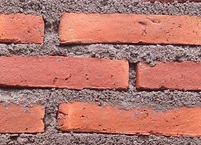

Mortero de cemento [MOC]
Cement mortar between masonry units consists of a cement and sand mix. Mortero de cemento tiene un color gris claro (similar al hormigón ) . Se considera un mortero de alta resistencia , y no se puede quitar fácilmente de la pared. Sin embargo , se mezclan proporciones para mortero de cemento ampliamente varían entre los países, de 1: 6 de cemento : arena a 1: 3 de cemento : arena. Tenga en cuenta que una mayor cantidad de resultados de cemento en una mayor resistencia del mortero e influye en la fuerza de la construcción de mampostería . Mortero de cemento se puede utilizar para todos los tipos de construcción de mampostería , a excepción de adobe albañilería.

Cement mortar (S. Brzev)